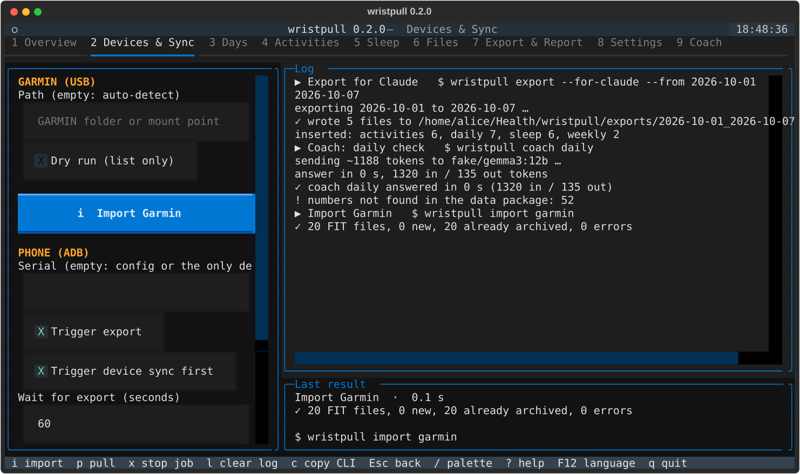
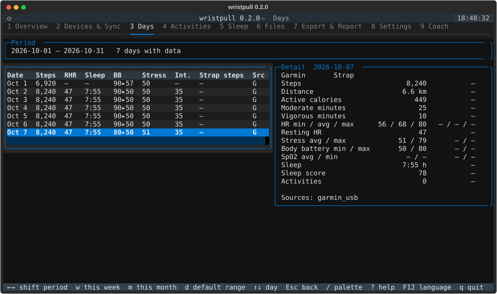
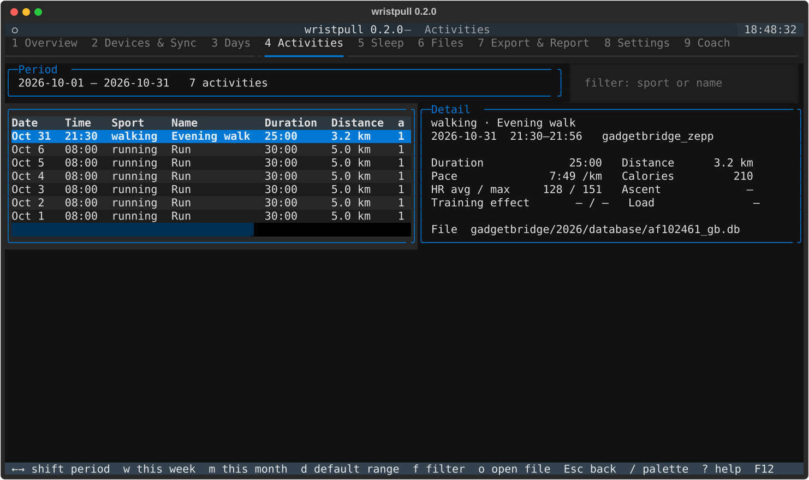
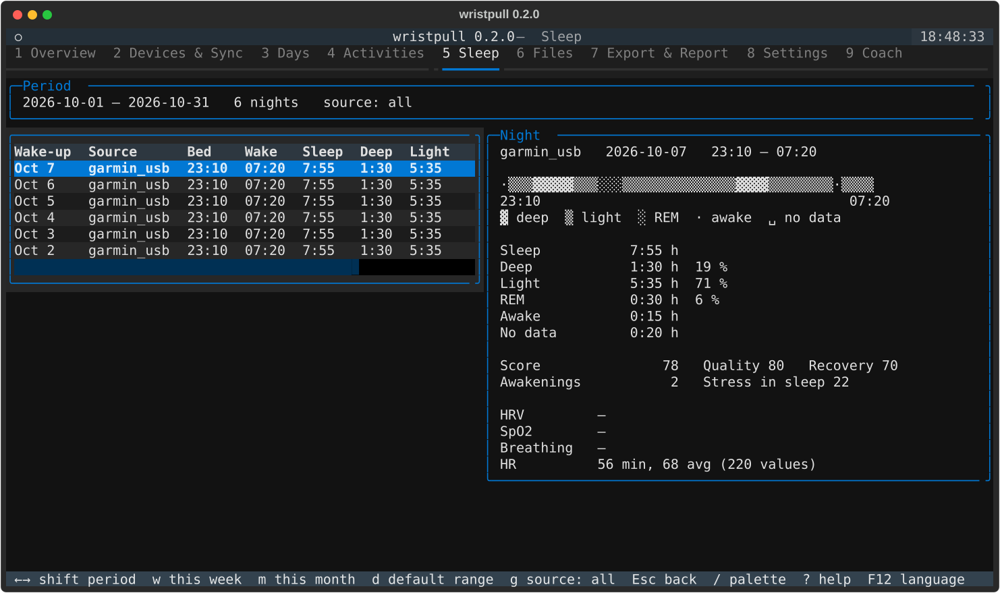
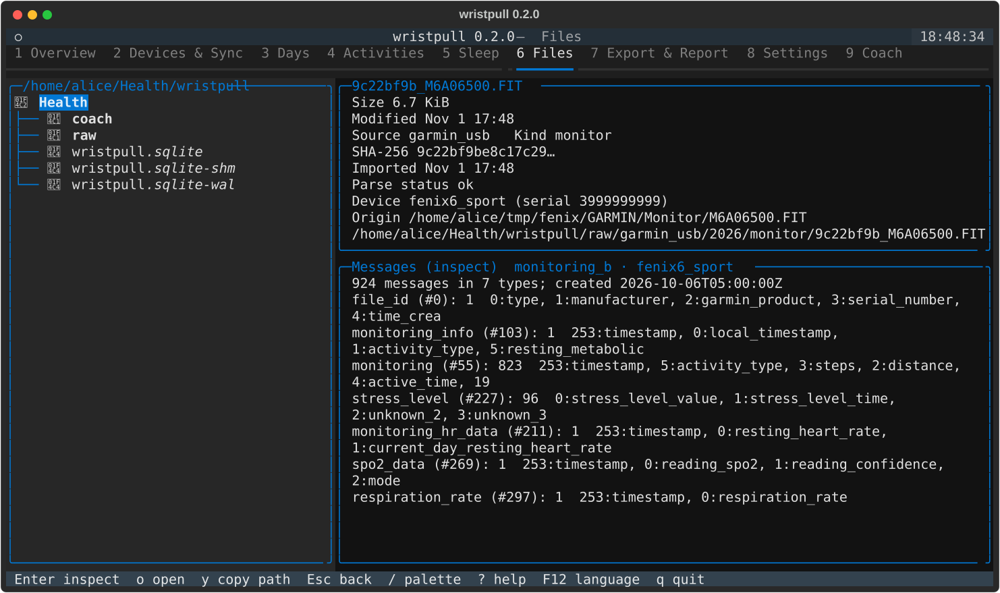
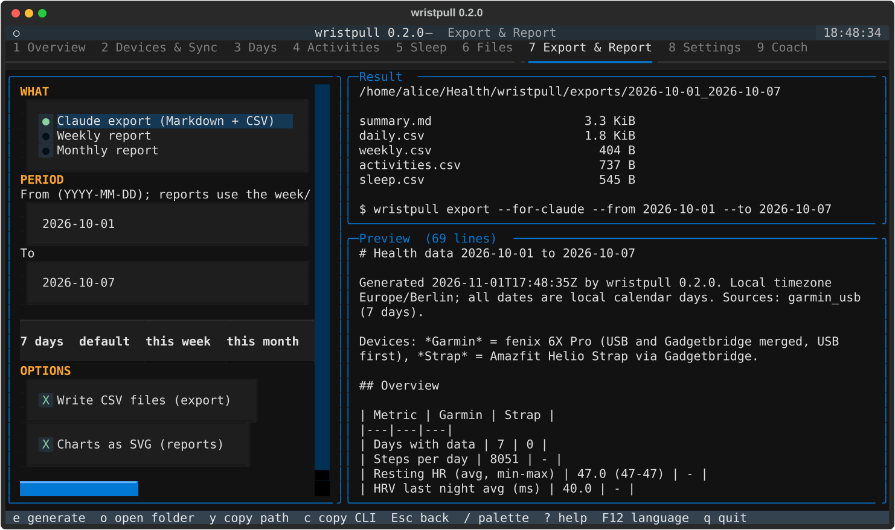
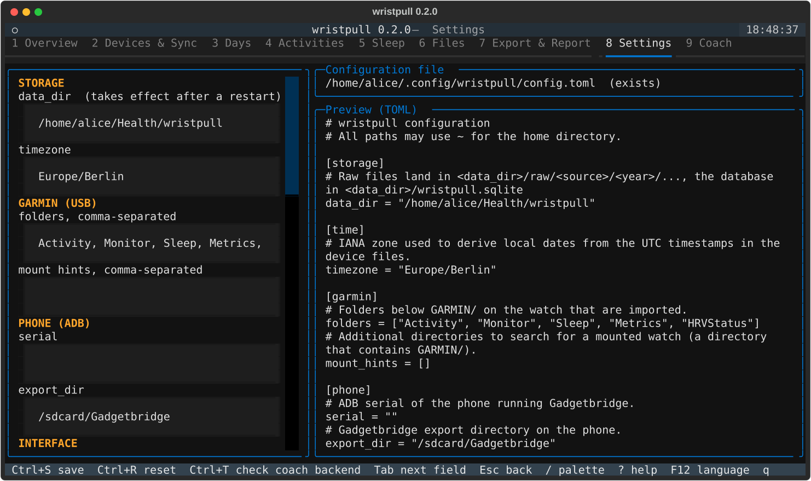
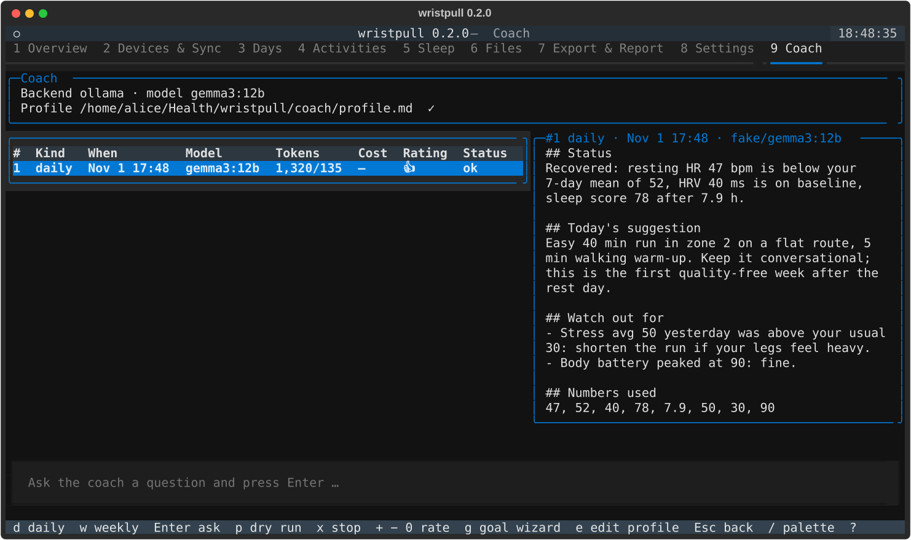

Local-first wearable data · Python · SQLite · your choice of LLM
Your body produces the data. Your machine should hold it.
wristpull pulls the raw files off a Garmin watch over USB and the Gadgetbridge export off your phone over ADB, normalises everything into one local SQLite database and lets a language model of your choosing coach you. No vendor cloud. No subscription. No account.
It currently runs every day with a Garmin fenix 6X Pro and an Amazfit Helio Strap worn side by side. Those two are examples, not requirements: they are simply the devices the project owner wears. Anything Gadgetbridge can read, or any watch that exposes its FIT files, is a candidate source.
$ wristpull import garmin
mounted mtp://091e_4cdb_<id>/
+ Sleep/GB171544.fit: sleep=1, sleep_stages=15
+ HRVStatus/GB171539.fit: hrv=1, hrv_values=91
+ Monitor/MB171500.FIT: heart_rate=428, stress=520
GARMIN: 41 FIT files, 5 new, 36 already archived, 0 errors
$ wristpull pull phone
Intent TRIGGER_DATABASE_EXPORT sent, export written at 06:17 UTC
Gadgetbridge.db: imported, heart_rate=689, hrv_values=400, sleep=1
device: fenix 6X Pro [AA:BB:…] -> gadgetbridge_garmin
device: Amazfit Helio Strap [AA:BB:…] -> gadgetbridge_zepp
$ wristpull coach daily --backend ollama --model gemma3:12b --lang en
## Status
Recovered: resting HR 47 bpm is below your 7-day mean of 52 …
[run #4, ollama/gemma3:12b, 385 s, 1141 in / 433 out tokens, $0.0000]▌Why this exists
Reclaim the data you already paid for with your heartbeat
I am an IT consultant. I own a Garmin fenix and a cheap heart-rate strap. Both are excellent sensors and both want to be gateways to a subscription. wristpull is the result of refusing that deal. These are the reasons, in the order they annoyed me.
The sensor is yours, the data should be too
Every FIT file the watch writes is already on the device. wristpull reads it over a USB cable and keeps the byte-identical original in a read-only archive, hashed with SHA-256. Nothing is uploaded to be looked at.
No subscription for a graph of your own sleep
Vendors move sleep scores, HRV status and training readiness behind paywalls one feature at a time. wristpull parses the same fields from the same files and stores them as plain columns you can query with sqlite3.
Independence from the device you wear today
Sources are a column, not an architecture decision. Garmin over USB, Garmin via Gadgetbridge, a Zepp strap via Gadgetbridge: three sources already, merged by a documented rule, two of them worn at the same time on the same wrist. Switch watches and the history stays; add a second device and the data sits side by side instead of in two apps.
You decide which model reads your health
A fully local Ollama model, the Claude API, or any model on OpenRouter. The backend choice is the privacy choice, made explicitly in the config, and a dry run shows the exact bytes that would be sent before anything leaves the machine.
Numbers are computed, not hallucinated
Baselines, deltas, the acute-to-chronic workload ratio and recovery flags are calculated in Python. The model only interprets, must quote the numbers it used, and every quoted number is checked against the data package.
Verified against the device, not against marketing
Sleep stages, HRV and SpO2 mappings were cross-checked row by row with Gadgetbridge's own tables and the watch display. Where a mapping is still unconfirmed, the UI says so.
How it works
A pipeline you can read in an afternoon
Around 4,000 lines of Python 3.14 with two runtime dependencies (fitdecode, polars). Every function has a test and every test runs on synthetic FIT files, so the repository never contains a single real heartbeat.
wristpull reparseData layout
~/Health/wristpull/
├── wristpull.sqlite
├── raw/<source>/<year>/<kind>/<sha8>_<name>
├── exports/<from>_<to>/summary.md + *.csv
├── reports/week-2026-W44/report.md + *.svg
└── coach/profile.md · dryrun/*.mdMerge rule, written down
garmin_usb wins over gadgetbridge_garmin column by column; the strap stays a separate source with its own strap_* columns. Activities and nights are deduplicated by start minute. One rule, one place (merge.py), one test.
Time, done properly
Every sample row carries ts_utc in ISO-8601, the IANA zone and a local_date. Midnight step counters are attributed to the day they belong to. DST changes are a test case, not a surprise.
Features
What you get today
Import that respects the device
Finds the mounted watch, copies only files whose SHA-256 is unknown, parses activities (sessions, laps, per-second records, HR zones), monitoring (HR, steps, stress, body battery, respiration, SpO2), sleep (stages, assessment scores) and HRV status. Never deletes anything on the watch.
Phone pull without a vendor app
Talks to Gadgetbridge over ADB: triggers the database export, compares file hashes on the phone, pulls only new files. Reads the Zepp strap's per-minute HR, stress, temperature, HRV and the band's own sleep sessions.
Terminal UI in German and English
Nine screens: overview with 7-day KPIs, sync with live job log and cancel, days, activities with HR zones and laps, sleep with stage bars, files with FIT inspection, export, settings and the coach. F12 switches the language at runtime.
Exports made for a chat window
wristpull export --for-claude writes a compact Markdown summary plus CSVs for a date range, sized to paste into any assistant. report week|month renders deltas against the previous period with SVG charts.
A coach that shows its working
Daily recovery check, weekly review with a plan for the next week, free questions. Goal wizard with multiple choice, an editable profile, ratings and notes that the coach sees next time. Every run with prompt, answer, tokens and cost in the database.
Repairable by design
Found a wrong field mapping? Fix the parser and run wristpull reparse --kind sleep. Raw files are the truth; tables are derived. Nothing is ever fetched twice.
Choose the model, own the decision
On premise, in the cloud, or none at all
The coach never sees raw records, GPS or serial numbers, only daily and weekly aggregates. What it sees is identical for every backend, so you can start local and move up only when you want better answers.
| Backend | Data leaves the machine | Typical model | Daily check | Cost per run |
|---|---|---|---|---|
| Ollama local | No. Runs on your CPU or GPU. | gemma3:4b / gemma3:12b | 1–6 min on a 4-core laptop CPU | electricity |
| Claude API cloud | Yes, to Anthropic, over the official SDK. | claude-opus-5-5 / sonnet-5-5 | about 20 s | 2–5 cents |
| OpenRouter cloud | Yes, to the provider you pick. | anything, e.g. deepseek-v4.1-flash | about 7 s | 0.2 cents and up |
Before anything is sent
$ wristpull coach daily --dry-run
dry run: prompt written to
~/Health/wristpull/coach/dryrun/20261101T162623Z_daily.md (~950 tokens)Read the exact prompt. Then decide.
What the model is told
Use only the numbers in the package and list them at the end. Missing is not zero. Be conservative when the flags say so. No diagnoses. Answer with these headings, in this order. The parser enforces the headings; the number check enforces the rest.
Memory stays local too
coach_runs and coach_feedback live in the same SQLite file as your heart rate. Delete the file and the coach forgets everything. No account to close.
Screens
The terminal UI
All screenshots are rendered headlessly from the synthetic test fixtures. The numbers, dates and the athlete are invented; the layout is the real thing.









What it is not
Read this before you trust a number
Not a medical device
The coach is told to refuse diagnoses and to send you to a doctor when values look pathological. Treat it as a training partner with a good memory, not as a clinician.
Early and opinionated
Verified on one Garmin fenix 6X Pro and one Amazfit Helio Strap, worn together, over a handful of nights, because that is what the project owner has on the wrist. Other watches will need parser work and real files to test against. Field mappings that are still unconfirmed are listed in the README and shown in the UI.
Sync is a race
A Garmin watch deletes monitoring files once any app has fetched them. If Garmin Connect syncs first, those hours are gone for everyone else. wristpull documents the order that keeps your data complete, but it cannot win a race you let the vendor app start.
Roadmap
Where this is going
The CLI, the terminal UI and the coach exist and are used every morning. The next steps widen who can use the data and where, without touching the principle: the SQLite file on your machine stays the single source of truth.
next
Web app for metrics
A local web dashboard over the same database: trends across months, heart-rate zones per week, sleep consistency, source comparison Garmin vs strap, the coach's advice next to what actually happened. Served from your machine or your home server, no account, readable on any screen in the house.
planned
Android app
Pull the Gadgetbridge export on the phone itself and sync the database to your computer over your own network, so the laptop and the cable become optional. Same tables, same files, same coach; the phone is a courier, not a cloud.
soon
Automation
A udev rule that imports when the watch is plugged in, a systemd timer for the phone pull and the morning check, a one-line daily journal the coach reads, the weekly plan as a calendar file.
on request
Features you need
More devices, another source such as nutrition or a scale, a different LLM backend, a metric the coach should track: open an issue and describe the use case. Small, well-scoped requests from people who run the tool shape the roadmap more than any plan.
Why support projects like this
Small tools keep big platforms honest
Every wearable vendor ships the same bargain: a good sensor, a mandatory cloud, a monthly fee for the analysis layer. Projects such as Gadgetbridge made the sensors readable. wristpull builds the analysis layer on top, locally, with an LLM of your choice. It only stays viable if people use it, break it and report what they find.
Run it on your devices
Another Garmin model, a different Zepp band, a Polar or Coros export via Gadgetbridge: every new device teaches the parsers something. Open an issue with wristpull inspect output of a file that parsed wrong.
Add a source
Nutrition, scales, a manual journal: the source column is the extension point. The merge rule and the coach package are built to grow.
Improve a prompt, keep the numbers
Coach prompts, goal fragments and the German catalog are plain text. Better wording helps every user; the number check keeps the honesty.
Star, fork, talk about it
Visibility is the currency that lets a side project survive its first winter. If you share the same fatigue with subscriptions, say so where the next person will read it.